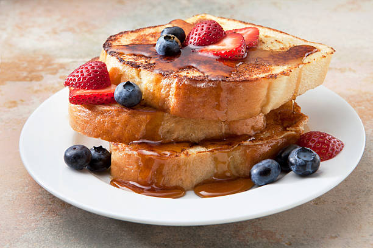

Protein French Toast

Description:
This is a high protein recipe perfect for your weight loss and muscle growth goals. It's approximately 500 calories with 80g of protein. It's been a staple on my aggressive cut of 1400 calories and will keep those sweet cravings away. It's super quick and easy with easy ingredient substitutions for normal french toast. You can adjust by using different ingredients types like the protein, bread, and toppings to your liking, but hopefully still hitting your macros.
Ingredients:
- White Keto Bread of preference
- Egg Whites(45g per slice of bread)
- Cinnamon
- Salt
- Sugar Free Syrup
- Sugar Free Raspberry Preserves
- Fat Free Whipped Cream(Optional)
- Whey Protein of choice
- 0 calorie spray
- 2% Ultra filtered milk
Steps:
- I'll use 4 slices of white keto bread from Aldi's so measure out 180g of egg whites into a bowl. Put salt and cinnamon into the egg whites to taste. Whisk so it's mixed a little bit.
- Heat up your frying pan to medium high and put some cooking spray on it. Then dip your bread into the egg mixture and let it soak for a bit. As you make this recipe more you'll understand how long to keep it there. Get both sides and put it onto the pan.
- Repeat for the remaining pieces of bread and make sure to cook each side for about 4 minutes or until done.
- Plate it with your choice of toppings. I usually go for some sugar free Raspberry preserves, sugar free syrup, and fat free whipped cream.
- Pro tip: For those who want more protein. Put 1 scoop of protein into a mug, slowly add some water while stirring until a thick syruppy level of viscocity is achieved. Then pour that over the french toast. This is called "Whey drip" and will instantly add 30g of protein.
- Enjoy your french toast with amazing macros with nice refreshing glass of milk!
Index